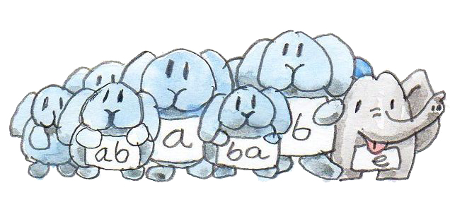
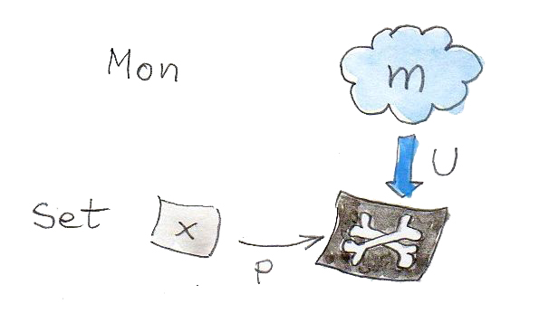
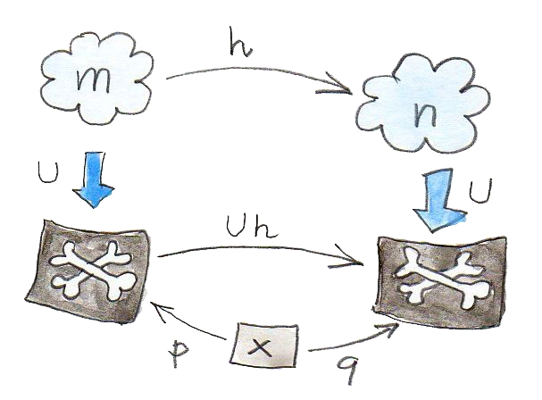

幺半群（monoid）在范畴论与编程中都是重要概念。范畴对应强类型语言，幺半群对应无类型语言。这是因为在幺半群中，任意两支箭头都可以复合，就像在无类型语言中任意两个函数都可以复合一样（当然，执行程序时可能得到运行时错误）。
我们已经看到，幺半群可以描述为只有一个对象的范畴，全部逻辑都编码在态射复合规则里。这个范畴模型与更传统的集合论定义完全等价：在集合中“相乘”两个元素得到第三个元素。这个“乘法”过程还可以拆成两步：先组成一对元素，再把这对元素认同为某个现有元素——它们的“积”。
如果放弃乘法的第二步——不再把元素对认同为现有元素——会怎样？例如，可以从任意集合出发，组成所有可能的元素对，并把它们称为新元素；再让这些新元素与所有可能的元素配对，如此继续。这是一种连锁反应——我们会永远不断加入新元素。结果得到的无限集合几乎是一个幺半群。但幺半群还需要单位元与结合律。没问题：可以加入一个特殊的单位元，再认同其中一些元素对——恰好足以满足单位律与结合律。
来看一个简单例子。从二元素集合 {a, b} 开始，称它们为自由幺半群的生成元（generators）。首先加入特殊元素 e 作为单位元。接着加入所有元素对，并称它们为“积”。a 与 b 的积是 (a, b)；b 与 a 的积是 (b, a)；a 与自身的积是 (a, a)；b 与自身的积是 (b, b)。也可以与 e 配对，如 (a, e)、(e, b) 等，但我们分别把它们认同为 a、b 等。因此这一轮只加入 (a, a)、(a, b)、(b, a)、(b, b)，最后得到集合 {e, a, b, (a, a), (a, b), (b, a), (b, b)}。

下一轮继续加入 (a, (a, b))、((a, b), a) 等元素。此时必须确保结合律成立，所以把 (a, (b, a)) 与 ((a, b), a) 等认同起来。换句话说，我们不再需要内部括号。
你大概能猜到这个过程的最终结果：我们会生成由任意数量 a、b 构成的所有列表。事实上，如果把 e 表示为空列表，就会发现这里的“乘法”不过是列表连接。
这种不断生成元素的所有可能组合、并只做满足定律所必需的最少认同的构造，称为自由构造（free construction）。我们刚才所做的，就是从生成元集合 {a, b} 构造出自由幺半群（free monoid）。
Haskell 中的自由幺半群
Haskell 中的二元素集合等价于类型 Bool，由它生成的自由幺半群等价于类型 [Bool]（Bool 的列表）。（这里有意忽略无限列表带来的问题。）
Haskell 用下面的类型类定义幺半群：
class Monoid m where
mempty :: m
mappend :: m -> m -> m它只是说，每个 Monoid 都必须有一个称为 mempty 的中性元素，以及一个称为 mappend 的二元函数（乘法）。Haskell 无法表达单位律与结合律，因此每次实例化幺半群时，都必须由程序员验证这些定律。
任意类型的列表都构成幺半群，这由下面的实例定义描述：
instance Monoid [a] where
mempty = []
mappend = (++)它说明空列表 [] 是单位元，列表连接 (++) 是二元运算。
正如已经看到的，a 类型的列表对应以集合 a 为生成元的自由幺半群。自然数在乘法下构成的幺半群不是自由幺半群，因为我们认同了大量乘积。例如比较：
2 * 3 = 6
[2] ++ [3] = [2, 3] -- 不等于 [6]这很容易，但问题是：在不能查看对象内部的范畴论里，能否完成这种自由构造？我们将使用一贯的主力工具：泛构造（universal construction）。
第二个有趣问题是：任何幺半群能否都通过某个自由幺半群得到，只需认同多于定律最低要求的元素？我会说明，这可以直接从泛构造推出。
自由幺半群的泛构造
回想之前接触的泛构造，你可能已经注意到：它与其说是在构造什么，不如说是在挑选最符合给定模式的对象。因此，若想用泛构造“构造”自由幺半群，就必须考察一大批幺半群，再从中选出一个。我们需要由幺半群组成的整个范畴。但幺半群能形成范畴吗？
先把幺半群看作带有额外结构的集合，这些结构由单位元与乘法定义。我们选择那些保持幺半群结构的函数作为态射。这样的结构保持函数称为同态（homomorphism）。幺半群同态必须把两个元素的积映射为这两个元素各自像的积：
h (a * b) = h a * h b而且必须把单位元映射到单位元。
例如，考虑从整数列表到整数的同态。如果把 [2] 映射到 2，把 [3] 映射到 3，就必须把 [2, 3] 映射到 6，因为连接：
[2] ++ [3] = [2, 3]变成了乘法：
2 * 3 = 6现在忘掉每个幺半群的内部结构，只把它们看成对象，并考察相应的态射。由此得到幺半群范畴 Mon。
好吧，在忘掉内部结构之前，再注意一个重要性质。Mon 的每个对象都可以平凡地映射到一个集合——就是其元素组成的集合，称为底层集合（underlying set）。事实上，不仅能把 Mon 的对象映射到集合，也能把 Mon 的态射（同态）映射到函数。这看起来同样理所当然，但马上就会有用。从 Mon 到 Set 的这种对象与态射映射实际上是一个函子。由于它“忘掉”了幺半群结构——一旦进入普通集合，就不再区分单位元，也不再关心乘法——所以称为遗忘函子（forgetful functor）。遗忘函子在范畴论中经常出现。
现在对 Mon 有两种不同视角。可以像对待任何其他范畴一样，只看它的对象和态射；在这种视角中，看不到幺半群的内部结构。对于 Mon 中某个特定对象，只能说它通过态射连接自身与其他对象。态射的“乘法表”——也就是复合规则——来自另一种视角：把幺半群看成集合。转向范畴论并未让我们彻底失去这种视角——仍可通过遗忘函子访问它。
应用泛构造，需要定义一个特殊性质，使我们能够在幺半群范畴中搜索并选出自由幺半群的最佳候选。但自由幺半群由生成元定义；不同的生成元选择会产生不同的自由幺半群（Bool 的列表不同于 Int 的列表）。构造必须从一个生成元集合开始。于是我们又回到了集合！
这正是遗忘函子发挥作用之处。可以用它对幺半群做 X 光透视，在这些团块的 X 光影像中识别生成元。具体如下。
从生成元集合 x 开始。它是 Set 中的一个集合。
要匹配的模式由 Mon 中的对象——幺半群 m——以及 Set 中的函数 p 组成：
p :: x -> U m其中 U 是从 Mon 到 Set 的遗忘函子。这是一个奇怪的异质模式——一半在 Mon 中，一半在 Set 中。
其思想是，函数 p 会在 m 的 X 光影像中标出生成元。函数可能并不擅长标识集合中的点（可能把多个点压成一个），但这没关系。泛构造会选出这个模式的最佳代表，把一切整理妥当。

还必须定义候选之间的排序。假设有另一个候选：幺半群 n，以及在其 X 光影像中标出生成元的函数：
q :: x -> U n若存在幺半群态射（即保持结构的同态）：
h :: m -> n而它在 U 下的像（记住，U 是函子，所以会把态射映射成函数）通过 p 因子分解：
q = U h . p我们就说 m 比 n 更好。若把 p 看作在 m 中选出生成元，把 q 看作在 n 中选出“相同的”生成元，就可以把 h 看作在两个幺半群之间映射这些生成元。记住，按定义，h 保持幺半群结构。这意味着一个幺半群中两个生成元的积，会被映射到第二个幺半群中对应生成元的积，如此类推。

利用这种排序，可以找到最佳候选——自由幺半群。定义如下：
当且仅当对于任意另一个幺半群 n（连同函数 q），都存在唯一一支从 m 到 n 且满足上述因子分解性质的态射 h 时，我们称 m（连同函数 p）为以 x 为生成元的自由幺半群。
顺带一提，这也回答了第二个问题。函数 U h 能够把 U m 中的多个元素压成 U n 中的一个元素。这种压缩对应于认同自由幺半群中的某些元素。因此，任何以 x 为生成元的幺半群，都可以由基于 x 的自由幺半群通过认同其中一些元素得到。自由幺半群正是只做了最低限度认同的那个幺半群。
讨论伴随时，我们还会回到自由幺半群。
习题
- 你可能会像我最初那样认为，要求幺半群同态保持单位元是多余的。毕竟对所有 a，都有：
所以h a * h e = h (a * e) = h ah e像右单位元一样作用（类似地也是左单位元）。问题在于，所有h a可能只覆盖目标幺半群的一个子幺半群；在h的像之外可能还有一个“真正的”单位元。证明：保持乘法的幺半群同构必然自动保持单位元。点击展开参考答案
设
h:M→N是保持乘法的同构。由于h满射，任意b∈N都可写成h(a)。于是h(e_M)b=h(e_M)h(a)=h(e_Ma)=h(a)=b；同理bh(e_M)=b。所以h(e_M)是 N 的双侧单位元。单位元唯一，因此h(e_M)=e_N。 - 考虑从以连接为运算的整数列表，到以乘法为运算的整数之间的幺半群同态。空列表
[]的像是什么？假设所有单元素列表都映射到其中所含的整数，即[3]映射到 3，等等。[1, 2, 3, 4]的像是什么？有多少个不同列表映射到整数 12？这两个幺半群之间还有其他同态吗？点击展开参考答案
[]必须映射到乘法单位元 1；[1,2,3,4]映射到1×2×3×4=24。映射到 12 的列表有无限多个，例如可在任何乘积为 12 的列表中任意插入 1，也可插入成对的-1。还有许多其他同态：整数列表是以整数集合为生成元的自由幺半群，所以任意指定每个单元素列表的整数像，都会唯一延伸成一个同态；只有额外要求[n]↦n时，乘积映射才是唯一的。 - 由单元素集合生成的自由幺半群是什么？你能看出它同构于什么吗？
点击展开参考答案
它由空列表、长度为 1 的列表、长度为 2 的列表……组成。每个元素完全由列表长度决定，因此它同构于自然数在加法下构成的幺半群：空列表对应 0，列表连接对应长度相加。